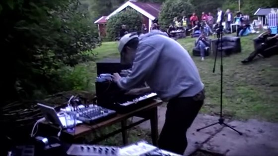

Psykopest
Ibland gör jag så kallad noisemusik under namnet Psykopest, ljud som hamnar lite i gränslandet mellan konst och musik. Nedan finns information om hur man tar del av de alster jag har satt ihop hittills. Mycket av det jag gör går att ladda ner i olika ljudformat från nätet, främst från archive.org.
“Contagion EP” MC och digital release 2024
- Bone Giant
- Deprecated Automatic Dragon
- Daydream Army
- Ascension
https://archive.org/details/psykopest-contagion-ep
“Belthane EP” digital release 2022
- Water Buffalo Afterbirth
- Horror Penguins Meet Lunar Bunny
- En kommunistbjörn
- Otherworldly Gnats
https://archive.org/details/psykopest-belthane-ep
https://psykopest.bandcamp.com/album/belthane-ep
https://soundcloud.com/psykopest/sets/belthane-ep
Psykopest: “Drugs For Bugs EP” 3” CD-r 2016
- Drugs For Bugs (excerpt)
- Tired Horse
- Pilgrimage of Chaotic Smurfs
- Potatis
https://soundcloud.com/psykopest/sets/psykopest-drugs-for-bugs-ep
Psykopest: “It’s alive!” 3” CD-r 2012 (19:48 min)
Innehåller två spår, det första inspelat live, se nedan.
- Liveshow (recorded live at the Ljudfest event at Hulterstad Grenadjärtorpet 2012-06-30)
- Snake and nape (previously released as soundtrack for the realtime multimedia presentation “Noise Demo” in 2009.)
 Youtube
Psykopest: “Red Dawn” C-30 ljudkassett 2006
Ladda ner från archive.org via denna länk: http://www.archive.org/details/Psykopest_-_Red_Dawn
Sida A:
- Skitstorm
- In the woods
- Shaking Fredrik
- You asshole
- They called him King (remix)
Sida B:
- A free lunch
- Gray water
- Space is the place
- Back to the drug factory
- Rockrock (utdrag)
Psykopest: “S/T” CD-r 2005 (34:37 min)
Ladda ner från archive.org via denna länk: http://www.archive.org/details/PsykopestSelfTiteled
- The Process
- Nice Boots
- Frozen Fish
- Jaundice
- Domesticating the wolves
- Oh no
- Submerged
- Higher grounds
- Your ass is grass
- Hey go
- Kings of confusion